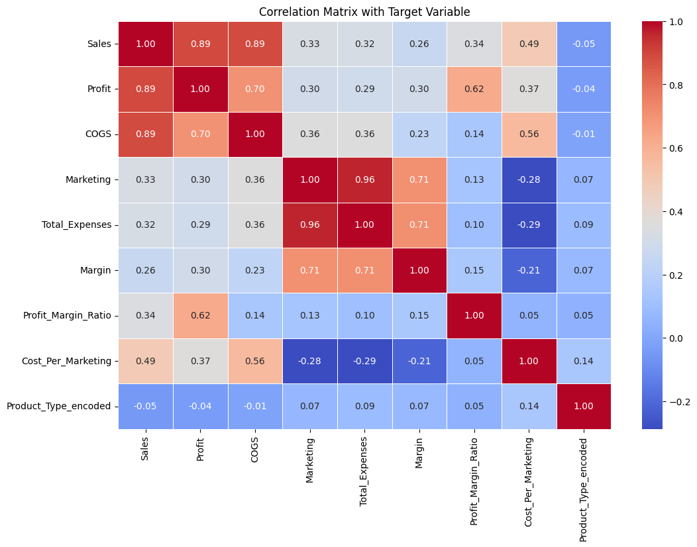
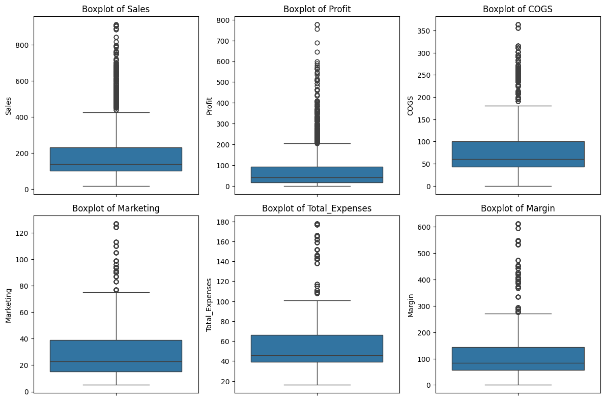
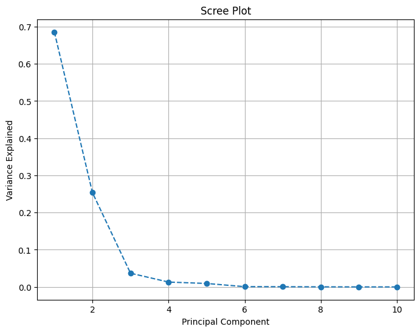

2. Notebook1#
import sqlite3
import csv
3. CONNECTING TO THE DATA BASE#
# let us connect to SQLite database
conn = sqlite3.connect('sales_db.sqlite')
cursor = conn.cursor()
4. CREATING THE 3NF DATABASE#
# let us create the normalized tables
cursor.execute('''
CREATE TABLE IF NOT EXISTS sales (
Area_Code TEXT,
State TEXT,
Market TEXT,
Market_Size TEXT,
Date TEXT,
Sales REAL,
Profit REAL,
COGS REAL,
ProductID TEXT
)
''')
cursor.execute('''
CREATE TABLE IF NOT EXISTS products (
ProductID TEXT PRIMARY KEY,
Product_Type TEXT,
Product TEXT
)
''')
cursor.execute('''
CREATE TABLE IF NOT EXISTS marketing (
Area_Code TEXT PRIMARY KEY,
Marketing REAL,
Total_Expenses REAL,
Margin REAL,
Budget_Sales REAL,
Budget_Profit REAL,
Budget_COGS REAL
)
''')
conn.commit()
sales_data = []
products_data = []
marketing_data = []
5. READING THE DATA SALES.CSV INSERTING INTO DATABASE#
with open('sales.csv', 'r') as file:
csv_reader = csv.DictReader(file)
for row in csv_reader:
# Prepare data for sales table
sales_data.append((
row['Area Code'], row['State'], row['Market'], row['Market Size'], row['Date'],
row['Sales'], row['Profit'], row['COGS'], row['ProductId']
))
# Prepare data for products table
products_data.append((
row['ProductId'], row['Product Type'], row['Product']
))
# Prepare data for marketing table
marketing_data.append((
row['Area Code'], row['Marketing'], row['Total Expenses'], row['Margin'],
row['Budget Sales'], row['Budget Profit'], row['Budget COGS']
))
# let us use `executemany` to insert data into the database
cursor.executemany('''
INSERT OR IGNORE INTO sales (Area_Code, State, Market, Market_Size, Date, Sales, Profit, COGS, ProductID)
VALUES (?, ?, ?, ?, ?, ?, ?, ?, ?)
''', sales_data)
cursor.executemany('''
INSERT OR IGNORE INTO products (ProductID, Product_Type, Product)
VALUES (?, ?, ?)
''', products_data)
cursor.executemany('''
INSERT OR IGNORE INTO marketing (Area_Code, Marketing, Total_Expenses, Margin, Budget_Sales, Budget_Profit, Budget_COGS)
VALUES (?, ?, ?, ?, ?, ?, ?)
''', marketing_data)
# Commit the changes
conn.commit()
6. VERYFYING THE DATA INSERTED#
# let us Verify the data
for row in cursor.execute('SELECT * FROM sales LIMIT 5'):
print(row)
for row in cursor.execute('SELECT * FROM products LIMIT 5'):
print(row)
for row in cursor.execute('SELECT * FROM marketing LIMIT 5'):
print(row)
# Close the connection
conn.close()
('203', 'Connecticut', 'East', 'Small Market', '04/01/10 00:00:00', 292.0, 107.0, 116.0, '2')
('203', 'Connecticut', 'East', 'Small Market', '07/01/10 00:00:00', 225.0, 75.0, 90.0, '2')
('203', 'Connecticut', 'East', 'Small Market', '11/01/10 00:00:00', 325.0, 122.0, 130.0, '2')
('203', 'Connecticut', 'East', 'Small Market', '12/01/10 00:00:00', 289.0, 105.0, 115.0, '2')
('203', 'Connecticut', 'East', 'Small Market', '07/01/11 00:00:00', 223.0, 104.0, 90.0, '2')
('2', 'Coffee', 'Columbian')
('13', 'Tea', 'Green Tea')
('5', 'Espresso', 'Caffe Mocha')
('6', 'Espresso', 'Decaf Espresso')
('9', 'Herbal Tea', 'Lemon')
('203', 38.0, 69.0, 176.0, 270.0, 110.0, 110.0)
('206', 16.0, 39.0, 77.0, 160.0, 70.0, 60.0)
('209', 40.0, 63.0, -21.0, 130.0, -80.0, 160.0)
('210', 75.0, 96.0, 288.0, 660.0, 270.0, 300.0)
('212', 22.0, 34.0, 117.0, 210.0, 100.0, 80.0)
import pandas as pd
---------------------------------------------------------------------------
ModuleNotFoundError Traceback (most recent call last)
Cell In[7], line 1
----> 1 import pandas as pd
ModuleNotFoundError: No module named 'pandas'
7. FETCHING THE DATA FROM DATABASE INTO PANDAS DATA FRAME#
# Connect to the SQLite database
conn = sqlite3.connect('sales_db.sqlite')
query = """
SELECT
s.Area_Code,
s.State,
s.Market,
s.Market_Size,
s.Date,
s.Sales,
s.Profit,
s.COGS,
p.Product_Type,
p.Product,
m.Marketing,
m.Total_Expenses,
m.Margin
FROM sales s
JOIN products p ON s.ProductID = p.ProductID
JOIN marketing m ON s.Area_Code = m.Area_Code;
"""
# let us execute the query and load the results into a Pandas DataFrame
df = pd.read_sql_query(query, conn)
print(df.head())
# Close the database connection
conn.close()
Area_Code State Market Market_Size Date Sales \
0 203 Connecticut East Small Market 04/01/10 00:00:00 292.0
1 203 Connecticut East Small Market 07/01/10 00:00:00 225.0
2 203 Connecticut East Small Market 11/01/10 00:00:00 325.0
3 203 Connecticut East Small Market 12/01/10 00:00:00 289.0
4 203 Connecticut East Small Market 07/01/11 00:00:00 223.0
Profit COGS Product_Type Product Marketing Total_Expenses Margin
0 107.0 116.0 Coffee Columbian 38.0 69.0 176.0
1 75.0 90.0 Coffee Columbian 38.0 69.0 176.0
2 122.0 130.0 Coffee Columbian 38.0 69.0 176.0
3 105.0 115.0 Coffee Columbian 38.0 69.0 176.0
4 104.0 90.0 Coffee Columbian 38.0 69.0 176.0
from sklearn.model_selection import train_test_split
8. DATA EXPLORATION AND EDA#
# let us do Basic Data Exploration
print(df.describe())
print(df.info())
Sales Profit COGS Marketing Total_Expenses \
count 8496.000000 8496.000000 8496.000000 8496.000000 8496.000000
mean 192.987524 61.097693 84.433145 31.027778 57.586158
std 151.124231 101.702559 67.245811 24.057429 31.670792
min 17.000000 -638.000000 0.000000 5.000000 16.000000
25% 100.000000 17.000000 43.000000 15.000000 39.000000
50% 138.000000 40.000000 60.000000 23.000000 46.000000
75% 230.000000 92.000000 100.000000 39.000000 66.000000
max 912.000000 778.000000 364.000000 127.000000 178.000000
Margin
count 8496.000000
mean 125.374765
std 120.073789
min -67.000000
25% 56.000000
50% 84.000000
75% 144.000000
max 613.000000
<class 'pandas.core.frame.DataFrame'>
RangeIndex: 8496 entries, 0 to 8495
Data columns (total 13 columns):
# Column Non-Null Count Dtype
--- ------ -------------- -----
0 Area_Code 8496 non-null object
1 State 8496 non-null object
2 Market 8496 non-null object
3 Market_Size 8496 non-null object
4 Date 8496 non-null object
5 Sales 8496 non-null float64
6 Profit 8496 non-null float64
7 COGS 8496 non-null float64
8 Product_Type 8496 non-null object
9 Product 8496 non-null object
10 Marketing 8496 non-null float64
11 Total_Expenses 8496 non-null float64
12 Margin 8496 non-null float64
dtypes: float64(6), object(7)
memory usage: 863.0+ KB
None
categorical_columns = ['COGS'] # Replace with your actual categorical columns
for col in categorical_columns:
print(f"Unique values in column {col}:")
print(df[col].unique())
print("\n")
Unique values in column COGS:
[116. 90. 130. 115. 103. 125. 20. 36. 19. 24. 53. 60. 61. 75.
65. 63. 64. 62. 55. 48. 43. 42. 47. 49. 85. 76. 80. 67.
79. 74. 68. 35. 34. 44. 37. 69. 92. 95. 110. 133. 124. 93.
96. 105. 58. 59. 54. 57. 78. 83. 71. 123. 40. 56. 52. 46.
45. 50. 30. 33. 22. 127. 154. 284. 121. 247. 251. 39. 113. 244.
104. 81. 86. 135. 173. 260. 239. 258. 364. 249. 234. 253. 228. 214.
225. 118. 266. 84. 77. 41. 51. 145. 162. 149. 21. 18. 144. 191.
252. 243. 100. 196. 291. 87. 91. 94. 72. 38. 170. 181. 114. 82.
112. 32. 97. 70. 31. 99. 153. 155. 88. 132. 263. 207. 148. 238.
200. 224. 272. 257. 89. 29. 279. 265. 271. 235. 25. 23. 28. 10.
15. 0. 109. 141. 245. 270. 111. 101. 209. 27. 102. 241. 120. 213.
98. 134. 161. 16. 17. 295. 122. 240. 255. 316. 108. 250. 356. 211.
294. 302. 195. 14. 311.]
9. TEST TRAIN SPLIT#
# Check class distribution
print(df['Product_Type'].value_counts())
# Train/test split with stratification (if needed)
X = df.drop(['Product_Type'], axis=1)
y = df['Product_Type']
X_train, X_test, y_train, y_test = train_test_split(
X, y, test_size=0.2, random_state=42, stratify=y
)
print(f"Train shape: {X_train.shape}, Test shape: {X_test.shape}")
Product_Type
Espresso 2352
Coffee 2112
Herbal Tea 2112
Tea 1920
Name: count, dtype: int64
Train shape: (6796, 12), Test shape: (1700, 12)
10. CORRELATION MATRIX and DATA CLEANING TASKS#
label_encoder = LabelEncoder()
df['Product_Type_encoded'] = label_encoder.fit_transform(df['Product_Type'])
# Selecting the numerical columns for correlation
numerical_columns = df.select_dtypes(include=['float64', 'int64']).columns
# let us Compute the correlation matrix
correlation_matrix = df[numerical_columns].corr()
# Plot the heatmap with the target variable included
plt.figure(figsize=(12, 8))
sns.heatmap(correlation_matrix, annot=True, cmap='coolwarm', fmt='.2f', linewidths=0.5)
plt.title('Correlation Matrix with Target Variable')
plt.show()

# let us investigate negative values
negative_profit_margin = df[(df['Profit'] < 0) | (df['Margin'] < 0)]
print(negative_profit_margin)
# let us Replace negatives with 0 or a placeholder (based on business rules)
df['Profit'] = df['Profit'].clip(lower=0)
df['Margin'] = df['Margin'].clip(lower=0)
Area_Code State Market Market_Size Date Sales \
14 203 Connecticut East Small Market 06/01/10 00:00:00 128.0
23 203 Connecticut East Small Market 12/01/11 00:00:00 140.0
68 206 Washington West Small Market 08/01/10 00:00:00 105.0
130 209 California West Major Market 05/01/10 00:00:00 106.0
131 209 California West Major Market 07/01/10 00:00:00 87.0
... ... ... ... ... ... ...
8359 971 Oregon West Small Market 11/01/11 00:00:00 133.0
8453 978 Massachusetts East Major Market 12/01/11 00:00:00 106.0
8491 985 Louisiana South Small Market 07/01/10 00:00:00 113.0
8492 985 Louisiana South Small Market 08/01/10 00:00:00 105.0
8493 985 Louisiana South Small Market 12/01/10 00:00:00 131.0
Profit COGS Product_Type Product Marketing Total_Expenses \
14 -2.0 53.0 Espresso Caffe Mocha 38.0 69.0
23 -3.0 55.0 Espresso Caffe Mocha 38.0 69.0
68 -8.0 44.0 Tea Green Tea 16.0 39.0
130 -84.0 127.0 Coffee Amaretto 40.0 63.0
131 -138.0 154.0 Coffee Amaretto 40.0 63.0
... ... ... ... ... ... ...
8359 -6.0 52.0 Coffee Amaretto 49.0 79.0
8453 -30.0 47.0 Espresso Caffe Mocha 23.0 54.0
8491 -6.0 47.0 Espresso Caffe Latte 13.0 25.0
8492 -7.0 44.0 Espresso Caffe Latte 13.0 25.0
8493 -3.0 55.0 Espresso Caffe Latte 13.0 25.0
Margin
14 176.0
23 176.0
68 77.0
130 -21.0
131 -21.0
... ...
8359 75.0
8453 420.0
8491 71.0
8492 71.0
8493 71.0
[1306 rows x 13 columns]
df['Date'] = pd.to_datetime(df['Date'])
print(df['Date'].head())
0 2010-04-01
1 2010-07-01
2 2010-11-01
3 2010-12-01
4 2011-07-01
Name: Date, dtype: datetime64[ns]
<ipython-input-48-111663ed1450>:1: UserWarning: Could not infer format, so each element will be parsed individually, falling back to `dateutil`. To ensure parsing is consistent and as-expected, please specify a format.
df['Date'] = pd.to_datetime(df['Date'])
11. plotting outliers#
#let us visualize outliers using boxplots
import seaborn as sns
import matplotlib.pyplot as plt
numerical_columns = ['Sales', 'Profit', 'COGS', 'Marketing', 'Total_Expenses', 'Margin']
plt.figure(figsize=(12, 8))
for i, col in enumerate(numerical_columns, 1):
plt.subplot(2, 3, i)
sns.boxplot(data=df[col])
plt.title(f"Boxplot of {col}")
plt.tight_layout()
plt.show()

X = df.drop(['Product_Type', 'Date'], axis=1) # Exclude non-predictive columns
y = df['Product_Type']
X_train, X_test, y_train, y_test = train_test_split(
X, y, test_size=0.3, random_state=42, stratify=y
)
print(f"New Train shape: {X_train.shape}, Test shape: {X_test.shape}")
New Train shape: (5947, 11), Test shape: (2549, 11)
12. DAGSHUB AUTHENCTION FOR ML FLOW#
!pip install dagshub mlflow
from dagshub import init
import mlflow
import mlflow.sklearn
# Initializing the DagsHub
init(
repo_owner='ushasreepeketi',
repo_name='my-first-repo',
mlflow=True
)
mlflow.set_experiment("ML_Project_Experiments")
Requirement already satisfied: dagshub in /usr/local/lib/python3.10/dist-packages (0.4.0)
Requirement already satisfied: mlflow in /usr/local/lib/python3.10/dist-packages (2.19.0)
Requirement already satisfied: PyYAML>=5 in /usr/local/lib/python3.10/dist-packages (from dagshub) (6.0.2)
Requirement already satisfied: appdirs>=1.4.4 in /usr/local/lib/python3.10/dist-packages (from dagshub) (1.4.4)
Requirement already satisfied: click>=8.0.4 in /usr/local/lib/python3.10/dist-packages (from dagshub) (8.1.7)
Requirement already satisfied: httpx>=0.23.0 in /usr/local/lib/python3.10/dist-packages (from dagshub) (0.28.1)
Requirement already satisfied: GitPython>=3.1.29 in /usr/local/lib/python3.10/dist-packages (from dagshub) (3.1.43)
Requirement already satisfied: rich>=13.1.0 in /usr/local/lib/python3.10/dist-packages (from dagshub) (13.9.4)
Requirement already satisfied: dacite~=1.6.0 in /usr/local/lib/python3.10/dist-packages (from dagshub) (1.6.0)
Requirement already satisfied: tenacity>=8.2.2 in /usr/local/lib/python3.10/dist-packages (from dagshub) (9.0.0)
Requirement already satisfied: gql[requests] in /usr/local/lib/python3.10/dist-packages (from dagshub) (3.5.0)
Requirement already satisfied: dataclasses-json in /usr/local/lib/python3.10/dist-packages (from dagshub) (0.6.7)
Requirement already satisfied: pandas in /usr/local/lib/python3.10/dist-packages (from dagshub) (2.2.2)
Requirement already satisfied: treelib>=1.6.4 in /usr/local/lib/python3.10/dist-packages (from dagshub) (1.7.0)
Requirement already satisfied: pathvalidate>=3.0.0 in /usr/local/lib/python3.10/dist-packages (from dagshub) (3.2.1)
Requirement already satisfied: python-dateutil in /usr/local/lib/python3.10/dist-packages (from dagshub) (2.8.2)
Requirement already satisfied: boto3 in /usr/local/lib/python3.10/dist-packages (from dagshub) (1.35.86)
Requirement already satisfied: dagshub-annotation-converter>=0.1.0 in /usr/local/lib/python3.10/dist-packages (from dagshub) (0.1.2)
Requirement already satisfied: mlflow-skinny==2.19.0 in /usr/local/lib/python3.10/dist-packages (from mlflow) (2.19.0)
Requirement already satisfied: Flask<4 in /usr/local/lib/python3.10/dist-packages (from mlflow) (3.1.0)
Requirement already satisfied: Jinja2<4,>=2.11 in /usr/local/lib/python3.10/dist-packages (from mlflow) (3.1.4)
Requirement already satisfied: alembic!=1.10.0,<2 in /usr/local/lib/python3.10/dist-packages (from mlflow) (1.14.0)
Requirement already satisfied: docker<8,>=4.0.0 in /usr/local/lib/python3.10/dist-packages (from mlflow) (7.1.0)
Requirement already satisfied: graphene<4 in /usr/local/lib/python3.10/dist-packages (from mlflow) (3.4.3)
Requirement already satisfied: gunicorn<24 in /usr/local/lib/python3.10/dist-packages (from mlflow) (23.0.0)
Requirement already satisfied: markdown<4,>=3.3 in /usr/local/lib/python3.10/dist-packages (from mlflow) (3.7)
Requirement already satisfied: matplotlib<4 in /usr/local/lib/python3.10/dist-packages (from mlflow) (3.8.0)
Requirement already satisfied: numpy<3 in /usr/local/lib/python3.10/dist-packages (from mlflow) (1.26.4)
Requirement already satisfied: pyarrow<19,>=4.0.0 in /usr/local/lib/python3.10/dist-packages (from mlflow) (17.0.0)
Requirement already satisfied: scikit-learn<2 in /usr/local/lib/python3.10/dist-packages (from mlflow) (1.6.0)
Requirement already satisfied: scipy<2 in /usr/local/lib/python3.10/dist-packages (from mlflow) (1.13.1)
Requirement already satisfied: sqlalchemy<3,>=1.4.0 in /usr/local/lib/python3.10/dist-packages (from mlflow) (2.0.36)
Requirement already satisfied: cachetools<6,>=5.0.0 in /usr/local/lib/python3.10/dist-packages (from mlflow-skinny==2.19.0->mlflow) (5.5.0)
Requirement already satisfied: cloudpickle<4 in /usr/local/lib/python3.10/dist-packages (from mlflow-skinny==2.19.0->mlflow) (3.1.0)
Requirement already satisfied: databricks-sdk<1,>=0.20.0 in /usr/local/lib/python3.10/dist-packages (from mlflow-skinny==2.19.0->mlflow) (0.40.0)
Requirement already satisfied: importlib_metadata!=4.7.0,<9,>=3.7.0 in /usr/local/lib/python3.10/dist-packages (from mlflow-skinny==2.19.0->mlflow) (8.5.0)
Requirement already satisfied: opentelemetry-api<3,>=1.9.0 in /usr/local/lib/python3.10/dist-packages (from mlflow-skinny==2.19.0->mlflow) (1.29.0)
Requirement already satisfied: opentelemetry-sdk<3,>=1.9.0 in /usr/local/lib/python3.10/dist-packages (from mlflow-skinny==2.19.0->mlflow) (1.29.0)
Requirement already satisfied: packaging<25 in /usr/local/lib/python3.10/dist-packages (from mlflow-skinny==2.19.0->mlflow) (24.2)
Requirement already satisfied: protobuf<6,>=3.12.0 in /usr/local/lib/python3.10/dist-packages (from mlflow-skinny==2.19.0->mlflow) (4.25.5)
Requirement already satisfied: requests<3,>=2.17.3 in /usr/local/lib/python3.10/dist-packages (from mlflow-skinny==2.19.0->mlflow) (2.32.3)
Requirement already satisfied: sqlparse<1,>=0.4.0 in /usr/local/lib/python3.10/dist-packages (from mlflow-skinny==2.19.0->mlflow) (0.5.3)
Requirement already satisfied: Mako in /usr/local/lib/python3.10/dist-packages (from alembic!=1.10.0,<2->mlflow) (1.3.8)
Requirement already satisfied: typing-extensions>=4 in /usr/local/lib/python3.10/dist-packages (from alembic!=1.10.0,<2->mlflow) (4.12.2)
Requirement already satisfied: lxml in /usr/local/lib/python3.10/dist-packages (from dagshub-annotation-converter>=0.1.0->dagshub) (5.3.0)
Requirement already satisfied: pillow in /usr/local/lib/python3.10/dist-packages (from dagshub-annotation-converter>=0.1.0->dagshub) (11.0.0)
Requirement already satisfied: pydantic>=2.0.0 in /usr/local/lib/python3.10/dist-packages (from dagshub-annotation-converter>=0.1.0->dagshub) (2.10.3)
Requirement already satisfied: urllib3>=1.26.0 in /usr/local/lib/python3.10/dist-packages (from docker<8,>=4.0.0->mlflow) (2.2.3)
Requirement already satisfied: Werkzeug>=3.1 in /usr/local/lib/python3.10/dist-packages (from Flask<4->mlflow) (3.1.3)
Requirement already satisfied: itsdangerous>=2.2 in /usr/local/lib/python3.10/dist-packages (from Flask<4->mlflow) (2.2.0)
Requirement already satisfied: blinker>=1.9 in /usr/local/lib/python3.10/dist-packages (from Flask<4->mlflow) (1.9.0)
Requirement already satisfied: gitdb<5,>=4.0.1 in /usr/local/lib/python3.10/dist-packages (from GitPython>=3.1.29->dagshub) (4.0.11)
Requirement already satisfied: graphql-core<3.3,>=3.1 in /usr/local/lib/python3.10/dist-packages (from graphene<4->mlflow) (3.2.5)
Requirement already satisfied: graphql-relay<3.3,>=3.1 in /usr/local/lib/python3.10/dist-packages (from graphene<4->mlflow) (3.2.0)
Requirement already satisfied: anyio in /usr/local/lib/python3.10/dist-packages (from httpx>=0.23.0->dagshub) (3.7.1)
Requirement already satisfied: certifi in /usr/local/lib/python3.10/dist-packages (from httpx>=0.23.0->dagshub) (2024.12.14)
Requirement already satisfied: httpcore==1.* in /usr/local/lib/python3.10/dist-packages (from httpx>=0.23.0->dagshub) (1.0.7)
Requirement already satisfied: idna in /usr/local/lib/python3.10/dist-packages (from httpx>=0.23.0->dagshub) (3.10)
Requirement already satisfied: h11<0.15,>=0.13 in /usr/local/lib/python3.10/dist-packages (from httpcore==1.*->httpx>=0.23.0->dagshub) (0.14.0)
Requirement already satisfied: MarkupSafe>=2.0 in /usr/local/lib/python3.10/dist-packages (from Jinja2<4,>=2.11->mlflow) (3.0.2)
Requirement already satisfied: contourpy>=1.0.1 in /usr/local/lib/python3.10/dist-packages (from matplotlib<4->mlflow) (1.3.1)
Requirement already satisfied: cycler>=0.10 in /usr/local/lib/python3.10/dist-packages (from matplotlib<4->mlflow) (0.12.1)
Requirement already satisfied: fonttools>=4.22.0 in /usr/local/lib/python3.10/dist-packages (from matplotlib<4->mlflow) (4.55.3)
Requirement already satisfied: kiwisolver>=1.0.1 in /usr/local/lib/python3.10/dist-packages (from matplotlib<4->mlflow) (1.4.7)
Requirement already satisfied: pyparsing>=2.3.1 in /usr/local/lib/python3.10/dist-packages (from matplotlib<4->mlflow) (3.2.0)
Requirement already satisfied: pytz>=2020.1 in /usr/local/lib/python3.10/dist-packages (from pandas->dagshub) (2024.2)
Requirement already satisfied: tzdata>=2022.7 in /usr/local/lib/python3.10/dist-packages (from pandas->dagshub) (2024.2)
Requirement already satisfied: six>=1.5 in /usr/local/lib/python3.10/dist-packages (from python-dateutil->dagshub) (1.17.0)
Requirement already satisfied: markdown-it-py>=2.2.0 in /usr/local/lib/python3.10/dist-packages (from rich>=13.1.0->dagshub) (3.0.0)
Requirement already satisfied: pygments<3.0.0,>=2.13.0 in /usr/local/lib/python3.10/dist-packages (from rich>=13.1.0->dagshub) (2.18.0)
Requirement already satisfied: joblib>=1.2.0 in /usr/local/lib/python3.10/dist-packages (from scikit-learn<2->mlflow) (1.4.2)
Requirement already satisfied: threadpoolctl>=3.1.0 in /usr/local/lib/python3.10/dist-packages (from scikit-learn<2->mlflow) (3.5.0)
Requirement already satisfied: greenlet!=0.4.17 in /usr/local/lib/python3.10/dist-packages (from sqlalchemy<3,>=1.4.0->mlflow) (3.1.1)
Requirement already satisfied: botocore<1.36.0,>=1.35.86 in /usr/local/lib/python3.10/dist-packages (from boto3->dagshub) (1.35.86)
Requirement already satisfied: jmespath<2.0.0,>=0.7.1 in /usr/local/lib/python3.10/dist-packages (from boto3->dagshub) (1.0.1)
Requirement already satisfied: s3transfer<0.11.0,>=0.10.0 in /usr/local/lib/python3.10/dist-packages (from boto3->dagshub) (0.10.4)
Requirement already satisfied: marshmallow<4.0.0,>=3.18.0 in /usr/local/lib/python3.10/dist-packages (from dataclasses-json->dagshub) (3.23.2)
Requirement already satisfied: typing-inspect<1,>=0.4.0 in /usr/local/lib/python3.10/dist-packages (from dataclasses-json->dagshub) (0.9.0)
Requirement already satisfied: yarl<2.0,>=1.6 in /usr/local/lib/python3.10/dist-packages (from gql[requests]->dagshub) (1.18.3)
Requirement already satisfied: backoff<3.0,>=1.11.1 in /usr/local/lib/python3.10/dist-packages (from gql[requests]->dagshub) (2.2.1)
Requirement already satisfied: requests-toolbelt<2,>=1.0.0 in /usr/local/lib/python3.10/dist-packages (from gql[requests]->dagshub) (1.0.0)
Requirement already satisfied: sniffio>=1.1 in /usr/local/lib/python3.10/dist-packages (from anyio->httpx>=0.23.0->dagshub) (1.3.1)
Requirement already satisfied: exceptiongroup in /usr/local/lib/python3.10/dist-packages (from anyio->httpx>=0.23.0->dagshub) (1.2.2)
Requirement already satisfied: google-auth~=2.0 in /usr/local/lib/python3.10/dist-packages (from databricks-sdk<1,>=0.20.0->mlflow-skinny==2.19.0->mlflow) (2.27.0)
Requirement already satisfied: smmap<6,>=3.0.1 in /usr/local/lib/python3.10/dist-packages (from gitdb<5,>=4.0.1->GitPython>=3.1.29->dagshub) (5.0.1)
Requirement already satisfied: zipp>=3.20 in /usr/local/lib/python3.10/dist-packages (from importlib_metadata!=4.7.0,<9,>=3.7.0->mlflow-skinny==2.19.0->mlflow) (3.21.0)
Requirement already satisfied: mdurl~=0.1 in /usr/local/lib/python3.10/dist-packages (from markdown-it-py>=2.2.0->rich>=13.1.0->dagshub) (0.1.2)
Requirement already satisfied: deprecated>=1.2.6 in /usr/local/lib/python3.10/dist-packages (from opentelemetry-api<3,>=1.9.0->mlflow-skinny==2.19.0->mlflow) (1.2.15)
Requirement already satisfied: opentelemetry-semantic-conventions==0.50b0 in /usr/local/lib/python3.10/dist-packages (from opentelemetry-sdk<3,>=1.9.0->mlflow-skinny==2.19.0->mlflow) (0.50b0)
Requirement already satisfied: annotated-types>=0.6.0 in /usr/local/lib/python3.10/dist-packages (from pydantic>=2.0.0->dagshub-annotation-converter>=0.1.0->dagshub) (0.7.0)
Requirement already satisfied: pydantic-core==2.27.1 in /usr/local/lib/python3.10/dist-packages (from pydantic>=2.0.0->dagshub-annotation-converter>=0.1.0->dagshub) (2.27.1)
Requirement already satisfied: charset-normalizer<4,>=2 in /usr/local/lib/python3.10/dist-packages (from requests<3,>=2.17.3->mlflow-skinny==2.19.0->mlflow) (3.4.0)
Requirement already satisfied: mypy-extensions>=0.3.0 in /usr/local/lib/python3.10/dist-packages (from typing-inspect<1,>=0.4.0->dataclasses-json->dagshub) (1.0.0)
Requirement already satisfied: multidict>=4.0 in /usr/local/lib/python3.10/dist-packages (from yarl<2.0,>=1.6->gql[requests]->dagshub) (6.1.0)
Requirement already satisfied: propcache>=0.2.0 in /usr/local/lib/python3.10/dist-packages (from yarl<2.0,>=1.6->gql[requests]->dagshub) (0.2.1)
Requirement already satisfied: wrapt<2,>=1.10 in /usr/local/lib/python3.10/dist-packages (from deprecated>=1.2.6->opentelemetry-api<3,>=1.9.0->mlflow-skinny==2.19.0->mlflow) (1.17.0)
Requirement already satisfied: pyasn1-modules>=0.2.1 in /usr/local/lib/python3.10/dist-packages (from google-auth~=2.0->databricks-sdk<1,>=0.20.0->mlflow-skinny==2.19.0->mlflow) (0.4.1)
Requirement already satisfied: rsa<5,>=3.1.4 in /usr/local/lib/python3.10/dist-packages (from google-auth~=2.0->databricks-sdk<1,>=0.20.0->mlflow-skinny==2.19.0->mlflow) (4.9)
Requirement already satisfied: pyasn1<0.7.0,>=0.4.6 in /usr/local/lib/python3.10/dist-packages (from pyasn1-modules>=0.2.1->google-auth~=2.0->databricks-sdk<1,>=0.20.0->mlflow-skinny==2.19.0->mlflow) (0.6.1)
Initialized MLflow to track repo "ushasreepeketi/my-first-repo"
Repository ushasreepeketi/my-first-repo initialized!
<Experiment: artifact_location='mlflow-artifacts:/9a2acbaef5b44313bd3d4e4973759481', creation_time=1734596403106, experiment_id='0', last_update_time=1734596403106, lifecycle_stage='active', name='ML_Project_Experiments', tags={}>
13. EXPERIMENT -1 LOGISTIC REGRESSION#
from sklearn.linear_model import LogisticRegression
from sklearn.pipeline import Pipeline
from sklearn.compose import ColumnTransformer
from sklearn.preprocessing import StandardScaler, OneHotEncoder
from sklearn.model_selection import cross_val_score, GridSearchCV
import mlflow
import mlflow.sklearn
from sklearn.metrics import accuracy_score, f1_score
f1_scores1 = {}
# let us do the preprocessing pipeline
numerical_features = ['Sales', 'Profit', 'COGS', 'Marketing', 'Total_Expenses']
categorical_features = ['State', 'Market', 'Market_Size']
numerical_transformer = StandardScaler()
categorical_transformer = OneHotEncoder(handle_unknown='ignore')
preprocessor = ColumnTransformer(
transformers=[
('num', numerical_transformer, numerical_features),
('cat', categorical_transformer, categorical_features)
]
)
# let us define logistic regression pipeline
pipeline = Pipeline(steps=[
('preprocessor', preprocessor),
('classifier', LogisticRegression(class_weight='balanced'))
])
# Hyperparameter tuning (optional)
param_grid = {
'classifier__C': [0.1, 1, 10],
'classifier__solver': ['liblinear', 'saga'],
}
grid_search = GridSearchCV(pipeline, param_grid, cv=10, scoring='f1_macro')
grid_search.fit(X_train, y_train)
# Log the experiment for mlflow
with mlflow.start_run(run_name="Logistic Regression"):
# Cross-validation
cv_scores = cross_val_score(grid_search.best_estimator_, X_train, y_train, cv=10, scoring='f1_macro')
mean_cv_score = cv_scores.mean()
std_cv_score = cv_scores.std()
# Fit the pipeline on full training data
pipeline.fit(X_train, y_train)
train_score = pipeline.score(X_train, y_train)
test_score = pipeline.score(X_test, y_test)
f1_scores1['Logistic Regression'] = mean_cv_score
# Log metrics
mlflow.log_metric("mean_cv_f1_score", mean_cv_score)
mlflow.log_metric("std_cv_f1_score", std_cv_score)
mlflow.log_metric("train_score", train_score)
mlflow.log_metric("test_score", test_score)
# Log model
mlflow.sklearn.log_model(pipeline, "logistic_regression_pipeline")
# Print Results
print(f"Logistic Regression: Train Score: {train_score:.2f}, Test Score: {test_score:.2f}")
print(f"Best Params: {grid_search.best_params_}")
/usr/local/lib/python3.10/dist-packages/sklearn/linear_model/_sag.py:348: ConvergenceWarning: The max_iter was reached which means the coef_ did not converge
warnings.warn(
/usr/local/lib/python3.10/dist-packages/sklearn/linear_model/_sag.py:348: ConvergenceWarning: The max_iter was reached which means the coef_ did not converge
warnings.warn(
/usr/local/lib/python3.10/dist-packages/sklearn/linear_model/_sag.py:348: ConvergenceWarning: The max_iter was reached which means the coef_ did not converge
warnings.warn(
/usr/local/lib/python3.10/dist-packages/sklearn/linear_model/_sag.py:348: ConvergenceWarning: The max_iter was reached which means the coef_ did not converge
warnings.warn(
/usr/local/lib/python3.10/dist-packages/sklearn/linear_model/_sag.py:348: ConvergenceWarning: The max_iter was reached which means the coef_ did not converge
warnings.warn(
/usr/local/lib/python3.10/dist-packages/sklearn/linear_model/_sag.py:348: ConvergenceWarning: The max_iter was reached which means the coef_ did not converge
warnings.warn(
/usr/local/lib/python3.10/dist-packages/sklearn/linear_model/_sag.py:348: ConvergenceWarning: The max_iter was reached which means the coef_ did not converge
warnings.warn(
/usr/local/lib/python3.10/dist-packages/sklearn/linear_model/_sag.py:348: ConvergenceWarning: The max_iter was reached which means the coef_ did not converge
warnings.warn(
/usr/local/lib/python3.10/dist-packages/sklearn/linear_model/_sag.py:348: ConvergenceWarning: The max_iter was reached which means the coef_ did not converge
warnings.warn(
/usr/local/lib/python3.10/dist-packages/sklearn/linear_model/_sag.py:348: ConvergenceWarning: The max_iter was reached which means the coef_ did not converge
warnings.warn(
/usr/local/lib/python3.10/dist-packages/sklearn/linear_model/_sag.py:348: ConvergenceWarning: The max_iter was reached which means the coef_ did not converge
warnings.warn(
/usr/local/lib/python3.10/dist-packages/sklearn/linear_model/_sag.py:348: ConvergenceWarning: The max_iter was reached which means the coef_ did not converge
warnings.warn(
/usr/local/lib/python3.10/dist-packages/sklearn/linear_model/_sag.py:348: ConvergenceWarning: The max_iter was reached which means the coef_ did not converge
warnings.warn(
/usr/local/lib/python3.10/dist-packages/sklearn/linear_model/_sag.py:348: ConvergenceWarning: The max_iter was reached which means the coef_ did not converge
warnings.warn(
/usr/local/lib/python3.10/dist-packages/sklearn/linear_model/_sag.py:348: ConvergenceWarning: The max_iter was reached which means the coef_ did not converge
warnings.warn(
/usr/local/lib/python3.10/dist-packages/sklearn/linear_model/_sag.py:348: ConvergenceWarning: The max_iter was reached which means the coef_ did not converge
warnings.warn(
/usr/local/lib/python3.10/dist-packages/sklearn/linear_model/_sag.py:348: ConvergenceWarning: The max_iter was reached which means the coef_ did not converge
warnings.warn(
/usr/local/lib/python3.10/dist-packages/sklearn/linear_model/_sag.py:348: ConvergenceWarning: The max_iter was reached which means the coef_ did not converge
warnings.warn(
/usr/local/lib/python3.10/dist-packages/sklearn/linear_model/_sag.py:348: ConvergenceWarning: The max_iter was reached which means the coef_ did not converge
warnings.warn(
/usr/local/lib/python3.10/dist-packages/sklearn/linear_model/_sag.py:348: ConvergenceWarning: The max_iter was reached which means the coef_ did not converge
warnings.warn(
2024/12/20 23:09:42 WARNING mlflow.models.model: Model logged without a signature and input example. Please set `input_example` parameter when logging the model to auto infer the model signature.
Logistic Regression: Train Score: 0.35, Test Score: 0.35
Best Params: {'classifier__C': 0.1, 'classifier__solver': 'liblinear'}
🏃 View run Logistic Regression at: https://dagshub.com/ushasreepeketi/my-first-repo.mlflow/#/experiments/0/runs/5fec7d1568204a819df0ac16287d90b4
🧪 View experiment at: https://dagshub.com/ushasreepeketi/my-first-repo.mlflow/#/experiments/0
from sklearn.preprocessing import LabelEncoder
# let us Encode the target variable
label_encoder = LabelEncoder()
y_train_encoded = label_encoder.fit_transform(y_train)
y_test_encoded = label_encoder.transform(y_test)
# let us Check the mapping
print("Class Mapping:", dict(zip(label_encoder.classes_, label_encoder.transform(label_encoder.classes_))))
print(X_train.head())
Class Mapping: {'Coffee': 0, 'Espresso': 1, 'Herbal Tea': 2, 'Tea': 3}
Area_Code State Market Market_Size Sales Profit COGS \
851 360 Washington West Small Market 188.0 86.0 72.0
5171 405 Oklahoma South Small Market 221.0 72.0 88.0
6573 603 New Hampshire East Small Market 116.0 0.0 45.0
7087 708 Illinois Central Major Market 190.0 92.0 78.0
456 303 Colorado Central Major Market 135.0 33.0 54.0
Product Marketing Total_Expenses Margin
851 Columbian 21.0 43.0 99.0
5171 Decaf Espresso 15.0 27.0 60.0
6573 Caffe Mocha 12.0 35.0 55.0
7087 Lemon 39.0 61.0 176.0
456 Decaf Espresso 27.0 39.0 144.0
14. EXPERIMENT -2 (logistsic,random forest,ridge)#
#xgb is done in next chunk
from sklearn.ensemble import RandomForestClassifier
from sklearn.linear_model import LogisticRegression, RidgeClassifier
from sklearn.pipeline import Pipeline
from sklearn.compose import ColumnTransformer
from sklearn.model_selection import cross_val_score
import mlflow
#let us define classifiers
classifiers = {
'LogisticRegression': LogisticRegression(),
'RandomForest': RandomForestClassifier(),
'RidgeClassifier': RidgeClassifier()
}
random_forest_pipeline = None
# Loop through classifiers
for name, clf in classifiers.items():
with mlflow.start_run(run_name=name):
pipeline = Pipeline(steps=[
('preprocessor', preprocessor), # Assuming preprocessor is already defined
('classifier', clf)
])
try:
# Cross-validation with encoded labels
cv_scores = cross_val_score(pipeline, X_train, y_train_encoded, cv=10, scoring='f1_macro')
mean_cv_score = cv_scores.mean()
std_cv_score = cv_scores.std()
# Fit the pipeline on full training data
pipeline.fit(X_train, y_train_encoded)
train_score = pipeline.score(X_train, y_train_encoded)
test_score = pipeline.score(X_test, y_test_encoded)
# Log metrics
f1_scores1[name] = mean_cv_score
mlflow.log_metric("mean_cv_f1_score", mean_cv_score)
mlflow.log_metric("std_cv_f1_score", std_cv_score)
mlflow.log_metric("train_score", train_score)
mlflow.log_metric("test_score", test_score)
# Log model
mlflow.sklearn.log_model(pipeline, f"{name}_pipeline")
# Store the RandomForest pipeline for saving later
if name == 'RandomForest':
random_forest_pipeline = pipeline
print(f"{name}: Train Score: {train_score:.2f}, Test Score: {test_score:.2f}")
except Exception as e:
print(f"Error with {name}: {e}")
2024/12/20 23:09:56 WARNING mlflow.models.model: Model logged without a signature and input example. Please set `input_example` parameter when logging the model to auto infer the model signature.
LogisticRegression: Train Score: 0.38, Test Score: 0.37
🏃 View run LogisticRegression at: https://dagshub.com/ushasreepeketi/my-first-repo.mlflow/#/experiments/0/runs/800535d81b70481e85d2f17adf7ed890
🧪 View experiment at: https://dagshub.com/ushasreepeketi/my-first-repo.mlflow/#/experiments/0
2024/12/20 23:10:34 WARNING mlflow.models.model: Model logged without a signature and input example. Please set `input_example` parameter when logging the model to auto infer the model signature.
RandomForest: Train Score: 1.00, Test Score: 0.96
🏃 View run RandomForest at: https://dagshub.com/ushasreepeketi/my-first-repo.mlflow/#/experiments/0/runs/bc0d82c81337493b9ce7d74ad1a662e7
🧪 View experiment at: https://dagshub.com/ushasreepeketi/my-first-repo.mlflow/#/experiments/0
2024/12/20 23:10:43 WARNING mlflow.models.model: Model logged without a signature and input example. Please set `input_example` parameter when logging the model to auto infer the model signature.
RidgeClassifier: Train Score: 0.36, Test Score: 0.35
🏃 View run RidgeClassifier at: https://dagshub.com/ushasreepeketi/my-first-repo.mlflow/#/experiments/0/runs/fea8fdcc299e411b84a4ade3beb69f2b
🧪 View experiment at: https://dagshub.com/ushasreepeketi/my-first-repo.mlflow/#/experiments/0
from sklearn.preprocessing import LabelEncoder
# let us apply label encoding to categorical columns
label_encoder = LabelEncoder()
X_train['State'] = label_encoder.fit_transform(X_train['State'])
X_train['Market'] = label_encoder.fit_transform(X_train['Market'])
X_train['Market_Size'] = label_encoder.fit_transform(X_train['Market_Size'])
X_train['Product'] = label_encoder.fit_transform(X_train['Product'])
X_train = pd.get_dummies(X_train, drop_first=True)
print(X_train.dtypes)
# let us convert any non-numeric columns to numeric
X_train = X_train.apply(pd.to_numeric, errors='coerce')
State int64
Market int64
Market_Size int64
Sales float64
Profit float64
...
Area_Code_971 bool
Area_Code_972 bool
Area_Code_978 bool
Area_Code_979 bool
Area_Code_985 bool
Length: 165, dtype: object
15. EXPERIMENT -2 XBG#
import xgboost as xgb
from sklearn.metrics import f1_score
from sklearn.model_selection import StratifiedKFold
import numpy as np
from sklearn.preprocessing import OneHotEncoder
# let us do One-hot encode categorical features for XGBoost
categorical_columns = [ 'State', 'Market', 'Market_Size', 'Product']
X_train_encoded = pd.get_dummies(X_train, columns=categorical_columns, drop_first=True)
X_test_encoded = pd.get_dummies(X_test, columns=categorical_columns, drop_first=True)
# let us align columns in case train and test differ after encoding
X_train_encoded, X_test_encoded = X_train_encoded.align(X_test_encoded, join='left', axis=1, fill_value=0)
# Handle XGBClassifier separately
with mlflow.start_run(run_name="XGBClassifier"):
skf = StratifiedKFold(n_splits=5, shuffle=True, random_state=42)
f1_scores = []
for train_idx, val_idx in skf.split(X_train_encoded, y_train_encoded):
X_fold_train, X_fold_val = X_train_encoded.iloc[train_idx], X_train_encoded.iloc[val_idx]
y_fold_train, y_fold_val = y_train_encoded[train_idx], y_train_encoded[val_idx]
# Create DMatrix
dtrain = xgb.DMatrix(X_fold_train, label=y_fold_train)
dval = xgb.DMatrix(X_fold_val, label=y_fold_val)
# Train XGBoost model
params = {
"objective": "multi:softmax",
"num_class": len(label_encoder.classes_),
"eval_metric": "mlogloss",
"seed": 12,
}
model = xgb.train(params, dtrain, num_boost_round=1, evals=[(dval, "validation")], verbose_eval=False)
y_pred = model.predict(dval)
f1 = f1_score(y_fold_val, y_pred, average='macro')
f1_scores.append(f1)
mean_f1 = np.mean(f1_scores)
std_f1 = np.std(f1_scores)
# Log metrics
mlflow.log_metric("mean_cv_f1_score", mean_f1)
mlflow.log_metric("std_cv_f1_score", std_f1)
print(f"XGBClassifier: Mean F1-Score: {mean_f1:.2f}, Std F1-Score: {std_f1:.2f}")
XGBClassifier: Mean F1-Score: 1.00, Std F1-Score: 0.00
🏃 View run XGBClassifier at: https://dagshub.com/ushasreepeketi/my-first-repo.mlflow/#/experiments/0/runs/1ffe647359ca427c936a60cd1ffbe1d1
🧪 View experiment at: https://dagshub.com/ushasreepeketi/my-first-repo.mlflow/#/experiments/0
16. EXPERIMENT 3#
with mlflow.start_run(run_name="Feature Engineering"):
# Adding the engineered features
df['Profit_Margin_Ratio'] = df['Profit'] / df['Sales']
df['Cost_Per_Marketing'] = df['COGS'] / (df['Marketing'] + 1)
# let us Log the parameters
mlflow.log_param("new_features", ["Profit_Margin_Ratio", "Cost_Per_Marketing"])
# Recompute preprocessing
numerical_features.extend(['Profit_Margin_Ratio', 'Cost_Per_Marketing'])
print("Feature engineering logged to MLFlow.")
Feature engineering logged to MLFlow.
🏃 View run Feature Engineering at: https://dagshub.com/ushasreepeketi/my-first-repo.mlflow/#/experiments/0/runs/bccadd6d00f840e7b4cee9b7c09e65e2
🧪 View experiment at: https://dagshub.com/ushasreepeketi/my-first-repo.mlflow/#/experiments/0
17. EXPERIMENT 4#
from sklearn.feature_selection import VarianceThreshold, SelectKBest, f_classif
with mlflow.start_run(run_name="Feature Selection"):
# Variance Threshold
selector = VarianceThreshold(threshold=0.01)
X_selected = selector.fit_transform(X_train)
# ANOVA F-test
anova_selector = SelectKBest(score_func=f_classif, k=10)
X_selected_anova = anova_selector.fit_transform(X_train, y_train)
# Log feature selection
mlflow.log_param("variance_threshold", 0.01)
mlflow.log_param("anova_top_k", 10)
print("Feature selection logged to MLFlow.")
Feature selection logged to MLFlow.
🏃 View run Feature Selection at: https://dagshub.com/ushasreepeketi/my-first-repo.mlflow/#/experiments/0/runs/70e399dd5e5346838e825fd43d3c9cbb
🧪 View experiment at: https://dagshub.com/ushasreepeketi/my-first-repo.mlflow/#/experiments/0
18. EXPERIMENT 5#
from sklearn.decomposition import PCA
import mlflow
import matplotlib.pyplot as plt
import numpy as np
with mlflow.start_run(run_name="PCA Experiment"):
#let us apply PCA with up to 10 components
n_components = 10
pca = PCA(n_components=n_components)
X_pca = pca.fit_transform(X_train)
explained_variance = pca.explained_variance_ratio_.tolist()
# Plotting the Scree Plot
plt.figure(figsize=(8, 6))
plt.plot(range(1, len(explained_variance) + 1), explained_variance, marker='o', linestyle='--')
plt.title('Scree Plot')
plt.xlabel('Principal Component')
plt.ylabel('Variance Explained')
plt.grid(True)
plt.show()
# Log PCA results to MLFlow
mlflow.log_param("pca_components", n_components)
mlflow.log_metric("explained_variance_sum", sum(explained_variance))
for i, variance in enumerate(explained_variance, start=1):
mlflow.log_metric(f"pca_variance_pc{i}", variance)
#let us Determine the cumulative variance
cumulative_variance = np.cumsum(explained_variance)
mlflow.log_metric("explained_variance_cumulative", cumulative_variance[-1])
# let us Log the number of selected components (up to 10)
mlflow.log_param("selected_components", n_components)
print(f"Selected {n_components} components for classification (up to PC 10).")
print("PCA experiment logged to MLFlow.")

Selected 10 components for classification (up to PC 10).
PCA experiment logged to MLFlow.
🏃 View run PCA Experiment at: https://dagshub.com/ushasreepeketi/my-first-repo.mlflow/#/experiments/0/runs/df12da1a89494af0964d48063cb138f0
🧪 View experiment at: https://dagshub.com/ushasreepeketi/my-first-repo.mlflow/#/experiments/0
19. EXPERIMENT 6 (custom1)#
from sklearn.neural_network import MLPClassifier
from sklearn.metrics import accuracy_score, f1_score
# let us Start a new MLFlow run for MLPClassifier
with mlflow.start_run(run_name="MLP_Product_Type"):
model = MLPClassifier(hidden_layer_sizes=(200,), max_iter=30, random_state=42,learning_rate='adaptive')
# Cross-validation setup
skf = StratifiedKFold(n_splits=4, shuffle=True, random_state=42)
accuracies = []
f1_scores = []
for train_idx, val_idx in skf.split(X_train, y_train):
X_fold_train, X_fold_val = X_train.iloc[train_idx], X_train.iloc[val_idx]
y_fold_train, y_fold_val = y_train.iloc[train_idx], y_train.iloc[val_idx]
# Train the model
model.fit(X_fold_train, y_fold_train)
y_pred = model.predict(X_fold_val)
# Evaluate model
accuracy = accuracy_score(y_fold_val, y_pred)
f1 = f1_score(y_fold_val, y_pred, average='macro')
accuracies.append(accuracy)
f1_scores.append(f1)
# Log the metrics
mean_accuracy = np.mean(accuracies)
mean_f1 = np.mean(f1_scores)
mlflow.log_metric("mean_accuracy", mean_accuracy)
mlflow.log_metric("mean_f1_score", mean_f1)
print(f"MLP -> Accuracy: {mean_accuracy:.2f}, F1-Score: {mean_f1:.2f}")
print("MLP Experiment Completed.")
f1_scores1["Mlp"]=0.71
/usr/local/lib/python3.10/dist-packages/sklearn/neural_network/_multilayer_perceptron.py:691: ConvergenceWarning: Stochastic Optimizer: Maximum iterations (30) reached and the optimization hasn't converged yet.
warnings.warn(
/usr/local/lib/python3.10/dist-packages/sklearn/neural_network/_multilayer_perceptron.py:691: ConvergenceWarning: Stochastic Optimizer: Maximum iterations (30) reached and the optimization hasn't converged yet.
warnings.warn(
/usr/local/lib/python3.10/dist-packages/sklearn/neural_network/_multilayer_perceptron.py:691: ConvergenceWarning: Stochastic Optimizer: Maximum iterations (30) reached and the optimization hasn't converged yet.
warnings.warn(
/usr/local/lib/python3.10/dist-packages/sklearn/neural_network/_multilayer_perceptron.py:691: ConvergenceWarning: Stochastic Optimizer: Maximum iterations (30) reached and the optimization hasn't converged yet.
warnings.warn(
MLP -> Accuracy: 0.71, F1-Score: 0.71
🏃 View run MLP_Product_Type at: https://dagshub.com/ushasreepeketi/my-first-repo.mlflow/#/experiments/0/runs/a3d803c31d8c49c68795eeb08db7d7aa
🧪 View experiment at: https://dagshub.com/ushasreepeketi/my-first-repo.mlflow/#/experiments/0
MLP Experiment Completed.
20. EXPERIMENT 7 (custom experiment-2)#
import mlflow
import mlflow.sklearn
from sklearn.ensemble import HistGradientBoostingClassifier
from sklearn.model_selection import GridSearchCV
from sklearn.metrics import accuracy_score, f1_score
from sklearn.model_selection import train_test_split
from sklearn.preprocessing import StandardScaler
import pandas as pd
# One-hot encode categorical columns consistently
categorical_columns = ['State', 'Market', 'Market_Size', 'Product']
X_train_encoded = pd.get_dummies(X_train, columns=categorical_columns, drop_first=True)
X_test_encoded = pd.get_dummies(X_test, columns=categorical_columns, drop_first=True)
# Align columns so that both train and test sets have the same features
X_train_encoded, X_test_encoded = X_train_encoded.align(X_test_encoded, join='left', axis=1, fill_value=0)
# Scaling the data (important for boosting models)
scaler = StandardScaler()
X_train_scaled = scaler.fit_transform(X_train_encoded)
X_test_scaled = scaler.transform(X_test_encoded)
# let us Start a new MLflow run to log this experiment
with mlflow.start_run():
# Create the HistGradientBoosting model
model = HistGradientBoostingClassifier(random_state=42)
# Set up the parameter grid for hyperparameter tuning
param_grid = {
'max_iter': [10, 20], # Number of boosting iterations
'learning_rate': [0.05, 0.1, 0.01], # Learning rate
'max_depth': [3, 5, 7], # Maximum depth of the trees
'min_samples_leaf': [20, 30, 50], # Minimum samples in each leaf node
'l2_regularization': [0.1, 0.2], # L2 regularization
'max_bins': [255, 512], # Number of bins for discretizing the data
}
# Set up GridSearchCV for hyperparameter tuning
grid_search = GridSearchCV(model, param_grid, cv=3, scoring='accuracy', n_jobs=-1)
grid_search.fit(X_train_scaled, y_train)
# Log the best hyperparameters found by GridSearchCV
best_params = grid_search.best_params_
mlflow.log_params(best_params) # Log hyperparameters in MLflow
# we will Get the best model after hyperparameter tuning
best_model = grid_search.best_estimator_
# Make predictions using the best model
y_pred = best_model.predict(X_test_scaled)
# Evaluate the model
accuracy = accuracy_score(y_test, y_pred)
f1 = f1_score(y_test, y_pred, average='macro')
# Log the evaluation metrics in MLflow
mlflow.log_metric('accuracy', accuracy)
mlflow.log_metric('f1_score', f1)
# Log the trained model in MLflow
mlflow.sklearn.log_model(best_model, "model")
# Print the results
print(f"HistGradientBoosting (Tuned) -> Accuracy: {accuracy:.2f}, F1-Score: {f1:.2f}")
f1_scores1['hist gradient']=0.19
/usr/local/lib/python3.10/dist-packages/sklearn/model_selection/_validation.py:528: FitFailedWarning:
324 fits failed out of a total of 648.
The score on these train-test partitions for these parameters will be set to nan.
If these failures are not expected, you can try to debug them by setting error_score='raise'.
Below are more details about the failures:
--------------------------------------------------------------------------------
324 fits failed with the following error:
Traceback (most recent call last):
File "/usr/local/lib/python3.10/dist-packages/sklearn/model_selection/_validation.py", line 866, in _fit_and_score
estimator.fit(X_train, y_train, **fit_params)
File "/usr/local/lib/python3.10/dist-packages/sklearn/base.py", line 1382, in wrapper
estimator._validate_params()
File "/usr/local/lib/python3.10/dist-packages/sklearn/base.py", line 436, in _validate_params
validate_parameter_constraints(
File "/usr/local/lib/python3.10/dist-packages/sklearn/utils/_param_validation.py", line 98, in validate_parameter_constraints
raise InvalidParameterError(
sklearn.utils._param_validation.InvalidParameterError: The 'max_bins' parameter of HistGradientBoostingClassifier must be an int in the range [2, 255]. Got 512 instead.
warnings.warn(some_fits_failed_message, FitFailedWarning)
/usr/local/lib/python3.10/dist-packages/sklearn/model_selection/_search.py:1107: UserWarning: One or more of the test scores are non-finite: [0.99092047 0.99092047 0.99092047 0.99747738 0.99747738 0.99747738
0.99932762 0.99932762 0.99932762 0.99949571 0.99932762 0.99932762
0.99714187 0.99714187 0.99747806 0.99932762 1. 1.
nan nan nan nan nan nan
nan nan nan nan nan nan
nan nan nan nan nan nan
0.99747738 0.99747738 0.99747738 1. 1. 1.
0.99949571 0.99932762 0.99932762 1. 1. 1.
0.99815078 1. 1. 1. 1. 1.
nan nan nan nan nan nan
nan nan nan nan nan nan
nan nan nan nan nan nan
0.95493582 0.95493582 0.95493582 0.95493582 0.95493582 0.95493582
0.97343108 0.97343108 0.97343108 0.99176146 0.99209782 0.99226591
0.9904155 0.9904155 0.98923892 0.99327448 0.99377886 0.99411513
nan nan nan nan nan nan
nan nan nan nan nan nan
nan nan nan nan nan nan
0.99092047 0.99092047 0.99092047 0.99747738 0.99747738 0.99747738
0.99932762 0.99932762 0.99932762 0.99932762 0.99932762 0.99932762
0.99714187 0.99714187 0.99747806 0.99932762 1. 1.
nan nan nan nan nan nan
nan nan nan nan nan nan
nan nan nan nan nan nan
0.99747738 0.99747738 0.99747738 1. 1. 1.
0.99949571 0.99932762 0.99932762 1. 1. 1.
0.99815078 1. 1. 1. 1. 1.
nan nan nan nan nan nan
nan nan nan nan nan nan
nan nan nan nan nan nan
0.95493582 0.95493582 0.95493582 0.95493582 0.95493582 0.95493582
0.97343108 0.97343108 0.97343108 0.99176146 0.99209782 0.99209782
0.9904155 0.9904155 0.98923892 0.99327448 0.99361068 0.99411513
nan nan nan nan nan nan
nan nan nan nan nan nan
nan nan nan nan nan nan]
warnings.warn(
2024/12/20 23:17:52 WARNING mlflow.models.model: Model logged without a signature and input example. Please set `input_example` parameter when logging the model to auto infer the model signature.
HistGradientBoosting (Tuned) -> Accuracy: 0.29, F1-Score: 0.19
🏃 View run masked-dog-48 at: https://dagshub.com/ushasreepeketi/my-first-repo.mlflow/#/experiments/0/runs/7a09b33203ed4cbeba57617e9dfbfbf2
🧪 View experiment at: https://dagshub.com/ushasreepeketi/my-first-repo.mlflow/#/experiments/0
21. F1 SCORE PLOTTING AND CHOOSING THE BEST MODEL#
f1_df = pd.DataFrame(list(f1_scores1.items()), columns=["Model", "F1-Score"])
# Creating a seaborn barplot to compare F1-scores across models and selecting the best model
plt.figure(figsize=(10, 6))
sns.barplot(data=f1_df, x='Model', y='F1-Score', palette="viridis")
plt.title("F1-Score Comparison of Different Models")
plt.xlabel("Model")
plt.ylabel("F1-Score")
plt.xticks(rotation=45)
plt.tight_layout()
plt.show()
<ipython-input-68-4ebd75da5026>:4: FutureWarning:
Passing `palette` without assigning `hue` is deprecated and will be removed in v0.14.0. Assign the `x` variable to `hue` and set `legend=False` for the same effect.
sns.barplot(data=f1_df, x='Model', y='F1-Score', palette="viridis")
22. SAVING THE MODEL USING JOBLIB#
import joblib
# let us save the best model which is random forest
model = random_forest_pipeline
# Save the model to a file
joblib.dump(model, 'final_model.pkl')
print("Model saved successfully!")
Model saved successfully!
23. FAST API CODE (creation):#
# FAST API CODE (creation):
from fastapi import FastAPI
from pydantic import BaseModel
import joblib
import pandas as pd
#Loading the best model we have got which is random forest
model = joblib.load('final_model.pkl')
#let us Initialize the FastAPI app
app = FastAPI()
#let us mapping of encoded labels to product types
product_type_mapping = {
0: "Coffee",
1: "Espresso",
2: "Herbal Tea",
3: "Tea"
}
class PredictionRequest(BaseModel):
data: dict # It accept data as a dictionary where keys are feature names and values are their respective values.
#let us define the root route
@app.get("/")
def read_root():
return {"message": "Welcome to the FastAPI application!"}
@app.post("/predict/")
async def predict(request: PredictionRequest):
# let us convert input data into a DataFrame
input_data = pd.DataFrame([request.data])
# letus predict using the model
prediction = model.predict(input_data)
# Mapping the numeric prediction to the product type
predicted_product = product_type_mapping.get(prediction[0], "Unknown")
return {"prediction": predicted_product}
#let us serve the model
if __name__ == "__main__":
import uvicorn
uvicorn.run(app, host="0.0.0.0", port=8000)
24. docker file#
#let us Use the latest Python image from Docker Hub with ARM64 architecture support
FROM --platform=linux/arm64 python:3.11-slim
#Set the working directory inside the container
WORKDIR /app
RUN apt-get update && apt-get install -y \
build-essential \
cmake \
python3-dev \
&& rm -rf /var/lib/apt/lists/*
COPY requirements.txt .
RUN pip install --no-cache-dir -U pip
#Install Python dependencies listed in requirements.txt
RUN pip install --no-cache-dir -r requirements.txt
#Copy the FastAPI application to the container
COPY . .
#Expose port 8000 for the FastAPI app to run
EXPOSE 8000
#Command to run the FastAPI application using Uvicorn
CMD ["uvicorn", "main:app", "--host", "0.0.0.0", "--port", "8000"]
25. PUSHED TO DOCKERHUB#
26. deployed the docker image to aws ecs#
27. STREAM LIT (CODE):#
# STREAM LIT (CODE):
import streamlit as st
import requests
st.title("Best Product Type to sell")
st.write("By Usha Sree Peketi")
st.write("Enter the details to check which product to sell!")
#Input Fields for the API
area_code = st.number_input("Area Code", min_value=200, max_value=999, step=1)
#Providing the dropdown options for categorical columns
state = st.selectbox("State", ['Connecticut', 'Washington', 'California', 'Texas', 'New York', 'Ohio',
'Illinois', 'Louisiana', 'Florida', 'Wisconsin', 'Colorado', 'Missouri',
'Iowa', 'Massachusetts', 'Oklahoma', 'Utah', 'Oregon', 'New Mexico',
'New Hampshire', 'Nevada'])
market = st.selectbox("Market", ['East', 'West', 'South', 'Central'])
market_size = st.selectbox("Market Size", ['Small Market', 'Major Market'])
product = st.selectbox("Product", ['Columbian', 'Green Tea', 'Caffe Mocha', 'Decaf Espresso', 'Lemon', 'Mint',
'Darjeeling', 'Decaf Irish Cream', 'Chamomile', 'Earl Grey', 'Caffe Latte',
'Amaretto', 'Regular Espresso'])
#Input Fields for numerical data
sales = st.number_input("Sales", min_value=0.0, step=0.01)
profit = st.number_input("Profit", min_value=0.0, step=0.01)
cogs = st.number_input("COGS", min_value=0.0, step=0.01)
marketing = st.number_input("Marketing", min_value=0.0, step=0.01)
total_expenses = st.number_input("Total Expenses", min_value=0.0, step=0.01)
margin = st.number_input("Margin", min_value=0.0, step=0.01)
#Button to Trigger Prediction
if st.button("Classify"):
# Validate input to ensure all fields are filled
if state and market and market_size and product and area_code and sales is not None and profit is not None and cogs is not None and marketing is not None and total_expenses is not None and margin is not None:
try:
api_url = "http://18.217.75.50:8000/predict/"
# Construct the payload
payload = {
"data": {
"Area_Code": area_code,
"State": state,
"Market": market,
"Market_Size": market_size,
"Sales": sales,
"Profit": profit,
"COGS": cogs,
"Product": product,
"Marketing": marketing,
"Total_Expenses": total_expenses,
"Margin": margin
}
}
# Make POST Request
response = requests.post(api_url, json=payload)
# Parse Response
if response.status_code == 200:
result = response.json()
st.success(f"Prediction: {result['prediction']}")
else:
st.error(f"Error: {response.json().get('detail', 'Unable to get prediction from the API.')}")
except Exception as e:
st.error(f"An error occurred: {str(e)}")
else:
st.warning("Please fill out all required fields.")
else:
st.info("Fill in the fields above and click 'Classify' to get a prediction.")
#Footer
st.write("Powered by Streamlit & FastAPI")